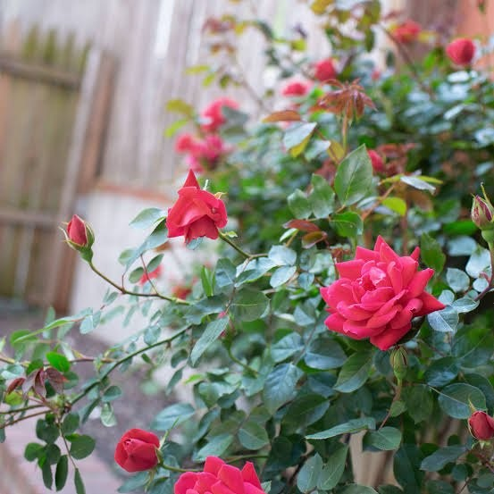

TIPS
Here are some additional tips for choosing nursery flowers:
Make sure the flowers are non-toxic.
There are many common flowers that are poisonous to children, so it's important to do your research before planting anything.
Choose flowers that are easy to care for. You don't want to spend a lot of time watering and feeding your flowers, so choose varieties that are drought-tolerant and low-maintenance.
Select flowers that bloom at different times of year. This will help to ensure that your nursery has color all season long.